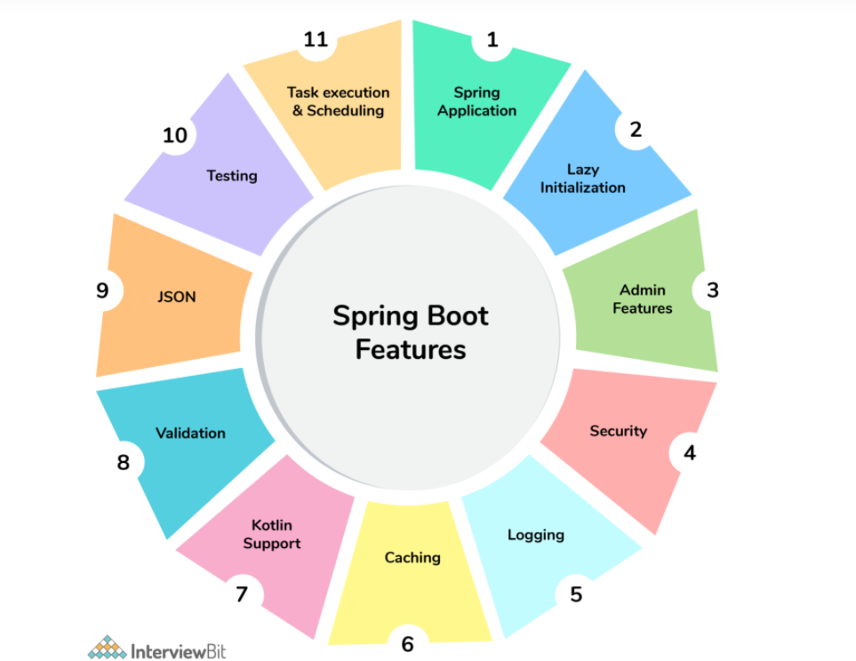

@SpringBootApplication
= @EnableAutoConfiguration+ @ComponentScan + @Configuration
Scheduling
Key components
CLI, Auto configuration, starters, actuators
Use Request Mapping if you have to send any parameters
actuators include auditing, health, CPU usage, HTTP hits, and metric gathering, and many more that are automatically applied to your application.
To enable actuator , add actuator starter dependency
Api'end points in actuator
Health
Info
Beans
Mappings
Configprops
Httptrace
Heapdump
Threaddump
Shutdown
Debugging logs can be enabled in three ways -
We can start the application with --debug switch.
We can set the logging.level.root=debug property in application.property file.
We can set the logging level of the root logger to debug in the supplied logging configuration file.
DI
Setter Injection
Constructor Injection
Field Injection
Disbale autoconfiguration
using exclude or
spring.autoconfigure.exclude property in applc.properties
Register a Custom Auto-Configuration
org.springframework.boot.autoconfigure.EnableAutoConfiguration=com.baeldung.autoconfigure.CustomAutoConfiguration
place it under resources/META-INF/spring.factories file
To instruct an auto-configuration class to back off when a bean already exists, we can use the @ConditionalOnMissingBean annotation.
spring-boot-maven-plugin - package as jar with all dependencies and embedded server
for War
mention packaging tag as War
and define the scope of starter-tomcat to provided
Spring Boot provides support for external configuration, allowing us to run the same application in various environments. We can use properties files, YAML files, environment variables, system properties and command-line option arguments to specify configuration properties.
We can then gain access to those properties using the @Value annotation, a bound object via the @ConfigurationProperties annotation, or the Environment abstraction.
IOC container
Framework which implements automatic dependency injection, manages object creation, life cycle of bean and injects dependencies into class
@Scheduled(cron = "$ flower schedule.cron ")
@Scheduled(fixedRate = 1000)
@Scheduled(fixedDelay = 1000, initialDelay = 1000)
Internal configurations in application-properties
External via command line or VM arguments
in yaml files
use spring profile to give different properties to diff environments
-DSpring.profiles.active = dev in VM arguments
Deploy as jar or War.
embedded containers
Tomact, Jetty, Undertow
to add others, exclude tomcat and add other dependencies